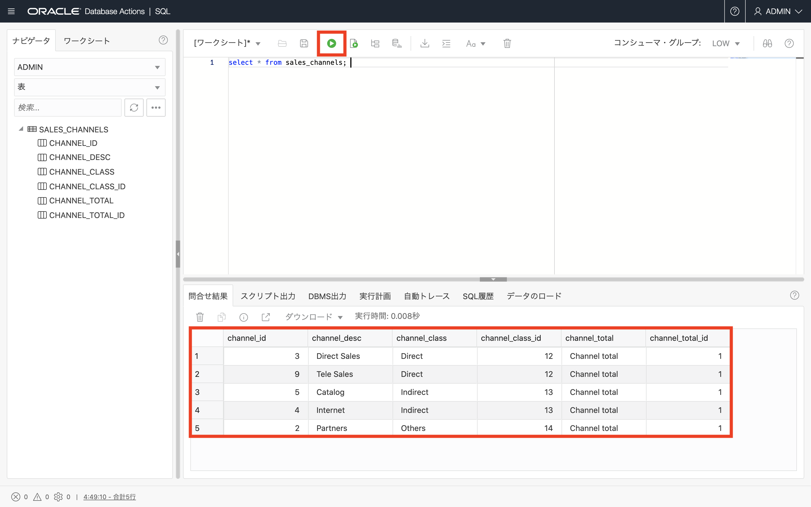

この章ではSQL Developer Webの後継機能である、Database Actionsを利用して、サンプルデータをADBインスタンスにデータをアップロードします。
事前に前提条件にリンクされているサンプルデータのzipファイルをお手元のPC上にダウンロードし、解凍しておいてください。
（集合ハンズオンセミナーでは講師の指示に従ってください）
所要時間 : #1 約10分, #2 約30分
前提条件 :
- ADBインスタンスを作成しようを完了していること
- 以下にリンクされているサンプルデータのzipファイルをダウンロードし、解凍していること(#1で使用するsales_channel.csvと#2で使用するcustomer.csvが含まれています)
注意 : チュートリアル内の画面ショットについては現在の画面と異なっている場合があります。
1.手元のPCからCSVデータをアップロードしてみよう
まず手元のPC上のデータをADBインスタンスにアップロードしてみましょう。サンプルデータとしてsales_channels.csvファイルを利用します。
-
ADBインスタンスを作成しようで学習したDatabase Actionsを利用したインスタンスへの接続 を参照し、Database Actionsを起動し、Adminユーザーで接続してください。

-
Database Actionsのランディングページのデータ・ツールから データ・ロード を選択します。

-
データの処理には、データのロード を選択し、データの場所には、ローカル・ファイル を選択して 次 をクリックします。

-
ファイルの選択をクリックし、ダウンロードして解凍した sales_channels.csv を選択します。

-
sales_channels.csvがロードできる状態になりました。ロード前にペンアイコンをクリックし、詳細設定を確認・変更できます。

-
sales_channels.csvの表定義等のデータのプレビューを確認したら 閉じる をクリックします。

-
緑色の実行ボタンをクリックし、データのロードを開始します。

-
データ・ロード・ジョブの実行を確認するポップアップが表示されるので、実行 をクリックします。

-
sales_channels.csvに緑色のチェックマークが付き、ロードが完了しました。完了をクリックします。

-
ロードされたsales_channels.csvが表として格納されたのかワークシートで確認していきます。SQLをクリック。

-
ロードされたデータの内容・件数を確認するために以下のSQLをワークシートに貼り付けて実行します。
SQL> select * from sales_channels;結果が表示されます。

これで、手元のPCからデータをADBにロードするチュートリアルが完了しました。
次は、Database Actionsで、クラウド・ストレージからのデータのロードをしてみましょう。
«««««««««««««««««««««««««ここまで編集済»»»»»»»»»»»»»»»»»»»»»»»»»
2. クラウド・ストレージからのデータのロードしてみよう
この章では、オブジェクトストレージからADBへのデータロード方法を記載します。
多少煩雑な手順となりますが、大量データをロードしたい場合はパフォーマンス性能の観点から本手順を推奨しています。
サンプルデータとしてcustomers.csvファイルを利用します。
作業の流れは以下の通りです。
- OCIオブジェクトストレージへのアクセス情報を取得
- オブジェクトストレージへのデータアップロード、アクセスURLの取得
- Database Actionsを利用したオブジェクトストレージからのデータのロード
1.OCIオブジェクトストレージへのアクセス情報を取得
以下の手順で、ADBインスタンスからオブジェクトストレージ上のファイルにアクセスするための、ユーザ名、Auth Token（認証トークン）を取得します。
Auth TokenはAPIでオブジェクトストレージにアクセスする時のパスワードに相当します。
-
OCIサービス画面の右上にある ユーザ（人型アイコン）→「ユーザ設定」 を選択します。

-
表示されている名前部分を選択してクリップボードにコピーし、テキストファイルに保存しておきます。
注意）ユーザ名の前に oracleidentitycloudservice/ のような接頭辞が付加されている場合は、これを含めてユーザ名とします

-
オブジェクトストレージアクセス用のAuth Tokenを生成するために、Auth Token をクリックします。

-
Generate Token をクリックし、Auth Token を生成します

-
用途に応じた概要をDescriptionに入力し、Generate Token をクリックします

1.Copy をクリックします。生成されたトークンがクリップボードにコピーされますので、メモ帳など適切な保存場所に貼り付け保存してください。この後の手順で利用します。
注意 : このトークン(Token)は、作成時に一度きりしか表示されません。紛失しないように必ず安全な場所に保管してください。

2.オブジェクトストレージへのデータアップロード
ダウンロードしたcustomers.csvをオブジェクトストレージへアップロードします。
-
メニューから オブジェクト・ストレージ をクリックします。

-
バケットの作成 をクリックします。

-
バケット名に adb-hol-bucket01 と入力し、他はそのままで 作成 をクリックし、バケットを作成してください。

-
作成されたバケット adb-hol-bucket01 をクリックします。

-
オブジェクトのアップロード をクリックして、お手元のPCにある customers.csv をアップロードしてください。（アップロードが完了し終了済と表示されたらOKです。）
-
アップロードしたファイルにアクセスするためのURLを入手しておきます。 アップロードしたファイルの右にあるメニューをクリックして、オブジェクト詳細の表示 をクリックします。

オブジェクトへのURLをコピーし、メモ帳など適切な保存場所に貼り付け保存してください。この後の手順で利用します。
なお、上記はWebブラウザ経由でアップロードしましたが、よりサイズの大きいデータをオブジェクト・ストレージにアップロードする場合はOCICLIをご利用ください。 より高速にアップロードすることが可能です。OCICLIについてはこちらを参考ください。
3.DBMS_CLOUDパッケージを利用したADBインスタンスへのデータロード
Database ActionsでAdminユーザーでADBに接続し、ワークシートで次のコマンドを順に実行してデータをロードします。
-
クレデンシャル情報の登録
クレデンシャル情報とはユーザ名とTokenの組み合わせで登録する認証情報です。後続ステップのデータロード実行時にADBが特定のOracle Object Storageにアクセスするために必要です。--クレデンシャル情報の登録 BEGIN DBMS_CLOUD.CREATE_CREDENTIAL( credential_name => 'WORKSHOP_CREDENTIAL', username => 'adb@handson.com', password => 'xxxxxx' ); END; /- credential_name: DBに保存した認証情報を識別するための任意の名前
- username: 上記で取得したOracle Object Storageにアクセスするためのユーザ名
- password: 上記で取得したAuth Token
なお、作成済みのCredentialを削除する場合は以下を実行してください。
--クレデンシャル情報の削除 BEGIN DBMS_CLOUD.DROP_CREDENTIAL( credential_name => 'WORKSHOP_CREDENTIAL' ); END; / -
ADB上にロード先の表を作成
--既に表がある場合は削除 DROP TABLE customers; --customers表の作成 CREATE TABLE customers ( cust_id NUMBER NOT NULL, cust_first_name VARCHAR2(20) NOT NULL, cust_last_name VARCHAR2(40) NOT NULL, cust_gender CHAR(1) NOT NULL, cust_year_of_birth NUMBER(4) NOT NULL, cust_marital_status VARCHAR2(20), cust_street_address VARCHAR2(40) NOT NULL, cust_postal_code VARCHAR2(10) NOT NULL, cust_city VARCHAR2(30) NOT NULL, cust_city_id NUMBER NOT NULL, cust_state_province VARCHAR2(40) NOT NULL, cust_state_province_id NUMBER NOT NULL, country_id NUMBER NOT NULL, cust_main_phone_number VARCHAR2(25) NOT NULL, cust_income_level VARCHAR2(30), cust_credit_limit NUMBER,cust_email VARCHAR2(50), cust_total VARCHAR2(14) NOT NULL, cust_total_id NUMBER NOT NULL, cust_src_id NUMBER,cust_eff_from DATE, cust_eff_to DATE,cust_valid VARCHAR2(1)); - ADB上へのデータのロード
--データロード BEGIN DBMS_CLOUD.COPY_DATA( table_name=>'CUSTOMERS', credential_name=>'WORKSHOP_CREDENTIAL', file_uri_list=>'https://objectstorage.<region>.oraclecloud.com/n/<namespace>/b/<bucket>/o/customers.csv', format=>json_object( 'ignoremissingcolumns' value 'true', 'removequotes' value 'true', 'dateformat' value 'YYYY-MM-DD HH24:MI:SS', 'blankasnull' value 'true') ); END; /file_uri_listには、アップロードしたファイルのURLを記載します。先の手順で入手したURLで更新してください。
- ロード結果の確認
select count(1) from CUSTOMERS; select * from CUSTOMERS where rownum <= 5; -
（必要に応じて）主キー（PK）など各種制約の作成
ALTER TABLE customers ADD CONSTRAINT customers_pk PRIMARY KEY (cust_id);ロード完了後に実行した方が、より高速にロードすることが可能なのでおススメです。
以上で、この章の作業は終了です。次にお進みください。
3. Note
よくある質問やTipsを記載します。
1.大量データのロード処理を高速化するには？
次の二つの方法が考えられます。
-
ソースファイルを圧縮
DBMS_CLOUDパッケージはgzip圧縮済みのファイルを展開せずにそのままロードできます。 -
ソースファイルを分割
ソースファイルがSJIS等の場合はロード前にファイルを分割しロードすることを推奨します。複数のCPUコアが並列に処理し高速にロードできます。
ソースファイルがUTF8の場合はDBMS_CLOUD内で自動的にファイルを分割するので不要ですが、もしgzipで圧縮する場合は、事前にファイルを分割した上で圧縮してください。
ロードしたいソースファイルが固定長フォーマットの場合もUTF8の場合と同様です。ファイル分割は不要ですが、もし圧縮する場合は事前にファイルを分割した上で圧縮してください。
なお、分割したCSVファイルの各ファイルの一行目に列名などのヘッダ情報がある場合はエラーとなるため、事前に削除しておくと良いです。- 具体的な実行例
DBMS_CLOUDパッケージで、compressionオプションを付与しつつ、ファイル名にワイルドカードを記載することで、gzip圧縮済みの複数のファイルを纏めてロードすることができます。
--複数ファイルのロード BEGIN DBMS_CLOUD.COPY_DATA( schema_name => 'ADWC_USER', table_name =>'CHANNELS1', credential_name =>'TKY01_CRED_USER', file_uri_list =>'https://objectstorage.ap-tokyo-1.oraclecloud.com/n/tenancyxxxx/b/backetxxxx/o/channels_data_*.gz', format => '{ "type":"CSV", "compression":"gzip", "dateformat":"YYYY-MM-DD", "timestampformat":"YYYY-MM-DD HH24:MI:SS.FF", "ignoremissingcolumns":"true" }' ); END; /※ファイルの分割や圧縮の処理時間や、ネットワーク転送速度などとの兼ね合いから、そのままロードした方が高速なケースもあります。
- 具体的な実行例
2.DBMS_CLOUD.COPY_DATAによるロードが失敗する場合の確認ポイント
まず最初にソースファイルにアクセスできているか確認してください。
-
認証系のエラー（ORA-20401: Authorization failed for URI）が出る場合
ユーザ名、Auth Tokenに誤りがないか再度確認してください。特にIDCSと連携している場合、ユーザ名にはoracleidentitycloudservice/ の接頭辞が必要です。
以下のSQL文でクレデンシャルが正しく登録されているか確認してください。select * from user_credentials; -
オブジェクトが見つからないエラー（ORA-20404: Object not found）が出る場合
オブジェクトストレージへのURLが正しいか、アップロード済みのファイル名が正しいか、再確認してください。
事前認証済みリクエストを作成し、アクセスできるか試してください。
オブジェクトストレージ上のバケットをPublic にして試してください。
次にADBインスタンス内のログを確認してください。
-
ロードに失敗した場合は、まず最初にログファイル、バッドファイルの表からSQL文でエラー内容を確認します。
以下はSQL*Plusでエラーを確認するスクリプトです。なお、ログは 2日で自動的に削除されます。--ログファイルの確認 -- (logfile_table, badfile_table 列で、ログファイルとバッドファイルの表名を確認) set lines 200 set pages 9999 col TABLE_NAME for a30 col LOGFILE_TABLE for a15 col BADFILE_TABLE for a15 SELECT table_name, logfile_table, badfile_table, status, update_time FROM user_load_operations WHERE type = 'COPY' order by 5; -- ログの確認 select * from COPY$1_LOG; select * from COPY$1_BAD;
3.お問い合わせのあった例・確認ポイント
- 列定義の文字数に注意
文字コード（CHARACTERSET パラメータ）は変更不可（AL32UTF8がデフォルト、2019/11現在）
既存DBがSJIS等の場合、オブジェクト名、および列定義のバイト数について、定義を一律2倍にするといった変更が必要な場合があります。 - ソースファイルについて
ヘッダ情報（通常1行目）に注意 ソースファイルを圧縮する場合、もしくはワイルドカード指定で複数のファイルを一括ロードする場合は、ソースファイルからヘッダを削除してください -
文字コードに注意、改行コードに注意
文字コードがUTF-8の場合は指定は不要。その他SJIS等の場合は、format句のcharactersetを指定してください。
改行コードがCR+LFの場合、recorddelimiterを指定してください。UNIX系で利用される 改行コード = LF の場合は recorddelimiter の指定は不要- 記載例
「format => json_object(‘type’ value ’CSV’ , ‘characterset’ value ’JA16SJIS’, ‘recorddelimiter’ value ‘’’’’’) 」
- 記載例
-
タイムスタンプのフォーマットが24時間表記の場合
format句のTimestampformatオプションにYYY-MM-DD HH24:MI:SS.FFを指定してください。 （YYYY-MM-DD HH:MI:SS.FFと記載するとエラーになる ） -
最後の列に空白がある場合
Ignoremissingcolumnsを指定してください。 -
列のNULLを許可する（ファイルの一部列データがNULL）の場合
‘blankasnull’ VALUE ‘true’ を設定する - その他
格納されているデータ固有のエラーに関する詳細はドキュメントのパッケージ説明もあわせて参照ください。